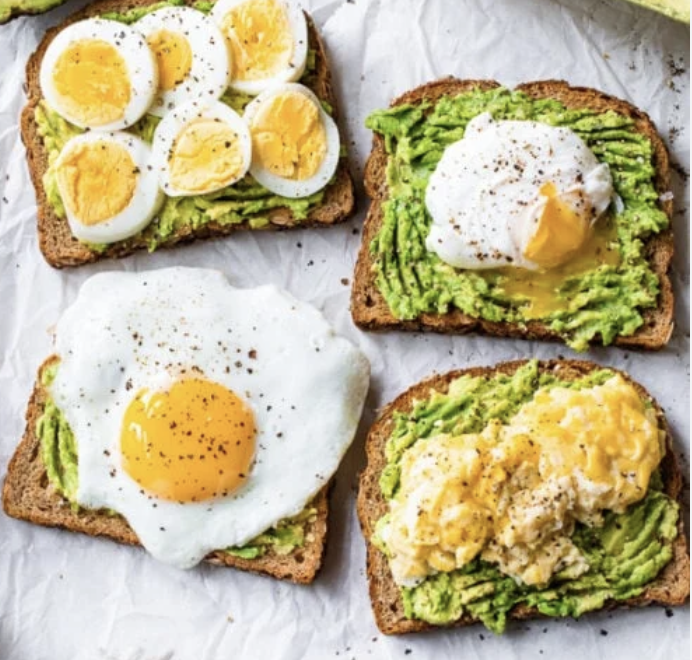
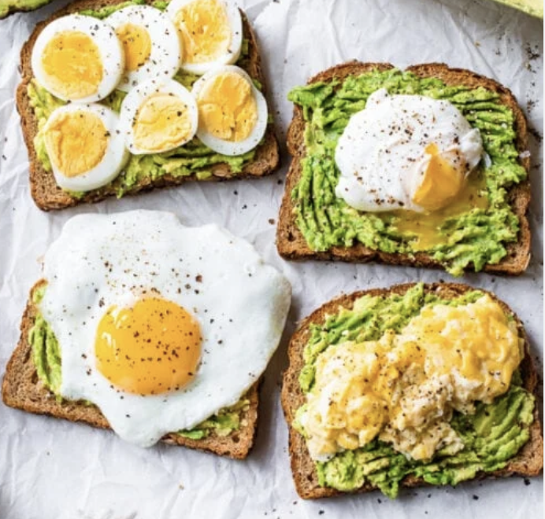

Lab 4 - Pseudocoding and Problem-Solving

 

Challenge
Restate the challenge of the lab here.
Problems
What problems arose? How did you solve them?
Results
- How to Hem a Pair of Pants
- Remove the Pre-existing Hem If There is One.
- Fold the bottom of the pants inward until they are the desired length.
- Pin the Fabric Above the Fold.
- Iron the Fold so That It Is Straight.
- Using a Sewing Machine, Sew a New Line Above the Fold.
- Cut the Excess Fabric Above the New Hem Off.
- Turn Your Freshly Hemmed pANTS right-Side Out
1. Print the Board Before Each Turn
- Print the rows
- Print the lines
2. Player One Makes Their First Move
- Decide To be X or O
- Their personal Server Sends A Message to the Server of the Game Theyre Playing
is Processed and player 1s choice shows up on-screen
3. Player Two Responds to Player Ones Move
- Their Personal Server Sends A Message to the Server of the Game Theyre Playing and Player 1s
is Processed and player 2s choice shows up on-screen
4. Game Continues Until One Player Has Filled a Row In a Straight or Diagonal Line With Their Letter (deeming them the winner)